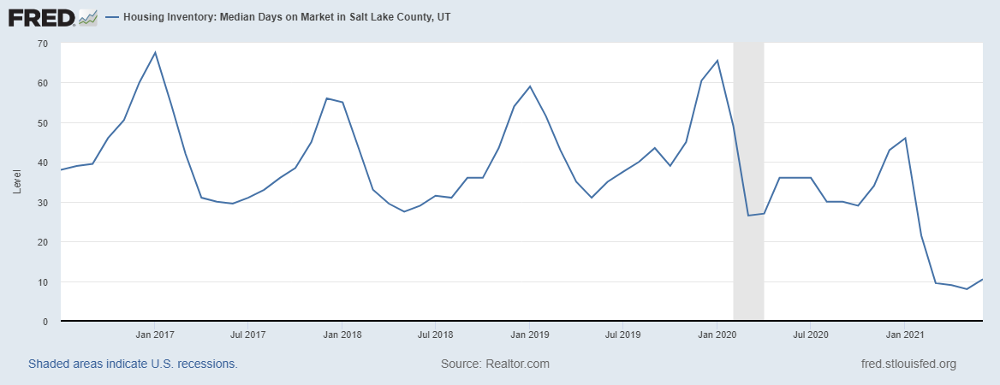

Analyzing Utah’s Current Housing issues and the effects for Renters
By: Adam Evans
This graph of the median selling time for a house in the SLC area shows a typical ebb and flow up until the last Year where a sharp drop indicates our current housing issues.
In May of 2021, a house up for sale sold within 10 days on average. (realtor.com) Currently, demand for housing seems so high, that properties are selling in record time. This is very apparent in this realtor.com graph from the Federal Reserve Economic Data center. (FRED) Properties that typically sold on a timescale of weeks, even during the peak summer seasons, are now selling in a matter of days instead. What has caused this sudden demand crisis in our city?
Increased demand typically leads to higher prices across the housing board, not only for buyers, but increased rates for renters. The Salt Lake Times observes not only have incomes stayed flat over the last two decades, but also “prices and prevailing rents climbed steadily skyward… fueled in part by investors’ speculative buying in Utah’s residential markets.” (Fields). Speculative buying is part of what fueled the 2008 market crash. As noted by Arthur Neilsen “The Great Recession was caused in large part by the bursting of the "housing bubble" of the middle 2000s.” (Neilsen) In his report, Arthur explains the factors behind our current housing distribution. Lower-density housing requires expanding incomes of the middle-class, with cheap energy prices. However, while this was great for the mid-20th century, conditions have changed now. Fuel and energy costs much more. As a result, it’s become more expensive to commute to office and store locations farther away from your home. (Neilsen) Housing units tend to last for at least a couple of generations, during which they can be subject to many different social changes. It’s quite possible that the sharp demand for housing in Utah is merely a symptom of a greater developmental change. One where the housing we build is more flexible and responsive to our economic changes through multiple generations.
So what type of developmental change are we shifting towards? The University of Utah Gardner Institute’s report on Housing Affordability notes that current Transit-Oriented Developments (TODs) are likely helping ease up the housing crisis, and for a few reasons; “TOD housing has the additional advantage of reducing transportation costs and increasing access to jobs, education, essential goods, and local services.” (Wood, Eskic, Benway, Poelman, pg 19). These developments are much higher density, and help ease the cost burdens of increasing fuel and energy prices with their close location to affordable transit and walking distance to needed resources, unlike our car-dependent suburban landscapes. The speculation from these experts suggests there’s a demand for higher-density housing. Why? Because it’s more appealing to newer generations concerned about energy costs and efficiency. However, more of these developments are still not enough. “Since 2009, the number of Utah households has increased by 220,720, while the number of dwelling units has increased by 185,334, a shortfall of 30%” (Wood, pg 1.)
Given the current information that’s been given, it seems the solution is to just build more higher-density housing units, and the supply should meet the demand. The problem is much more complicated than that. Across much of the U.S. and not just in Utah, housing insecurity has been driven by cost and wage issues. The Russell Sage Foundation’s study on the feasibility of a ‘renters tax credit’ cites “...half of renters face housing cost burdens, devoting more than one-third of their income to rent; one in four face severe cost burdens, handing over more than half of their income to rent.” (Kimberlin, pg 2) What would the point of building hundreds of thousands of new housing units be when the people it’s supposed to serve can’t afford them? The Russell Sage Foundation attempts to provide solutions with a tax credit that would offset the cost burden for lower-income families. These tax credits would ideally help lower-income families be more able to afford renting the high-density housing projects that we will ultimately need to build in order to address this crisis.
It should be addressed that many residents in single-unit suburban housing have a negative view on high-density housing. (Eskic pg 1.) Another report by the Gardner Institute explains they either believe it to drive up prices, much like what we are currently experiencing, or decrease their property value. (Eskic pg 2) The report concludes otherwise. “...single-family homes located ≤1/2 mile of a new apartment experienced a 9.7% average annual increase in value, while the value for homes farther away increased 7.7% on average annually. Median value year-over trends in the Southwest area [from West Jordan to Herriman] show little or no difference...” (Eskic pg 2) So while personal preferences between individuals on whether they prefer detached single-unit homes or higher-density apartments still remain, it seems we have only to gain from the economic impacts of more higher-density housing. Infact, it likely will have very little negative impact on the demand issue seen in the graph above. It will likely help improve housing prices and demand overall.
The solution to our current housing crisis has many different factors. These include the current pay and economy of buyers, the interest from outside investors, and the actual supply of housing in the State. More housing and higher-density housing seems to be part of the solution to this problem, along with various support programs for renters and buyers alike. However, it is important to note: “While density is a solution to alleviate costs, zoning is the mechanism that allows or denies it. Zoning regulations, more than any other local policies, govern the annual supply of single-family and multifamily housing.” (Eskic, pg 8)